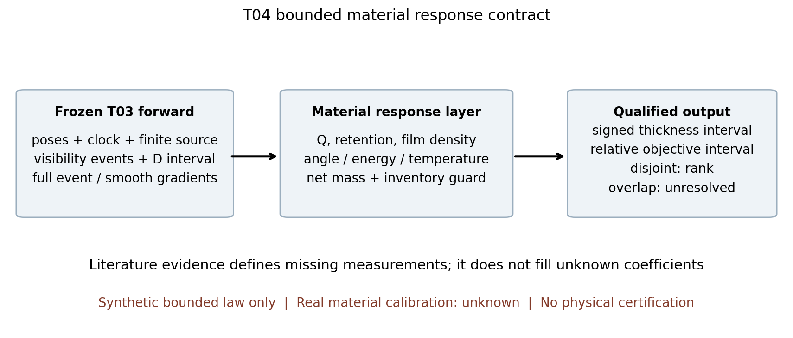
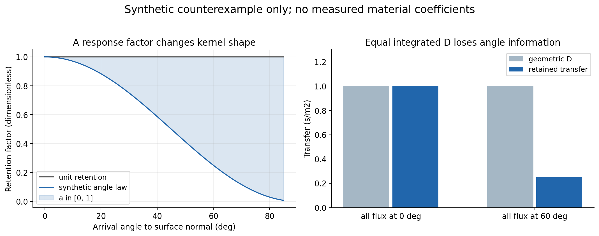
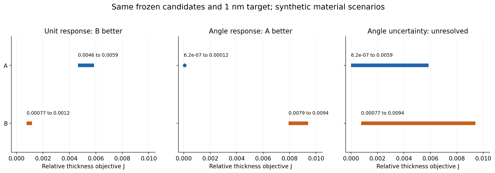

T04 第三轮 材料响应的有界传递
结论：几何积分D的优劣不能直接当材料膜厚/性能优劣。全候选共享正比例并且目标同比换算时，当前相对目标才有保排名保证；角度、能量、温度改变核形状，或目标不同比换算，都可能改变排名。材料区间重叠返回无法分辨。
本包只到local freeze。参考law、所有算例及driver输入为synthetic，不是实机材料常数。保留完整T03 forward及事件资格；T02 point12仍partial、point2仍条件非严格。正式指定模型链pending，实机资格未验证。未改产品代码、根计划、用户电脑或冻结原件；未上传、未push。
阅读路线
1. 独立HTML reader：六章手册、三图、六来源摘要
2. 物理接口与单位
3. 原始证据与基片边界
4. 有界核、事件项与排名
5. 已运行反例
6. 识别与验证计划
7. 复算与限制
8. T05候选交接：交接不等于启动下一题
本地小验证
在本目录运行，依赖numpy与jsonschema：
python -B verification/reader_check.py
python -B -m unittest discover -s tests -v
python -B models/device_driver.py
最后一条只输出plan_only，不启动重计算。复算示例用 models/run_examples.py --output 指向新外部文件；冻结后不要覆盖data/tiny_results.json。绘图为可选，另需matplotlib/Pillow。
来源：6个公开原始来源的原创摘要；2份CC BY 4.0原文单独本地保存，不进入reader。PNG已实际查看像素。HTML只做结构/资源检查；浏览器layout未经验证，保留既有socket/权限边界，不绕过。
1 从几何传递到材料响应：合同与可辨识性
1.1 本轮真正增加什么
本轮承接冻结T03的有限厚板、仿射运动、公共时钟、有限源节点与完整forward，新增一个能拒绝不合资格输入的材料响应层。几何候选A、B保持各自已有板形；材料情景改变时不重画板、不改轨迹、不改源时钟。下游不能把几何目标J的改进直接命名为“膜性能改进”。
代表性公开证据是YbF3/Ge及硅石见证片、ZnS/Ge用途与玻璃实验、SiO2/Si及Al2O3斜入射见证片。Ge属于原优先基片；Si、硅石、Al2O3只作为有原始证据的研究见证片，不代替K9、ZnS、ZnSe。没有重建全12膜料×4基片矩阵，也没有重造已恢复37条配方。
冻结边界：上游T02 point12仍partial，离子参考未运行；point2仍条件非严格。T03在有限编码源上的事件/积分证据保留；对真实连续源、实际材料和生产资格仍无证明。模型链DeepSeek/Seed/Sol指定审查未实际执行，均pending。
1.2 不能把两个D混为一谈
本轮D_g是T03几何传递积分，单位s/m²。第二轮材料合同中的D_i是带电粒子面注量，单位charged_particles/m²。两者同字母但不是同一物理量。本轮输出用retained_transfer_s_m2避免用裸D；需要粒子计数时沿用第二轮逐物种/逐元素合同，不用本轮面质量直接冒充粒子注量。
冻结几何核写作
D_g(p) = Σ_l w_l ∫ V_l(t;p) K_l(t) dt
K_l = A q(t) H² / (H²+y_l(t)²)²，y_l(t)=x0+x_shift+v(t+clock_offset)−(s_l+s_shift)
其中q=q0+q1 t用参考时钟，位姿时间偏移不重计源时钟。K包含发射余弦、入射余弦和平方反比；只对应这套y=0有限厚矩形板模型。w_l为冻结离散源权重，不暗示连续源求积误差已经闭合。
1.3 质量基准路线及归一化
给定角通量质量强度系数Q，入射面质量为Q D_g；Q在SI中单位kg/s（立体角sr无量纲），但并不自动等于半球总质量蒸发率。若使用总Lambert半球质量率Q_total，必须显式设Q=Q_total/π或把1/π放入冻结源权重，二者只能做一次。Q不是QCM显示nm/s，也不是电子束功率；本轮2×10⁻⁶ kg/s只是假定的强度系数。
材料留存率s=s(θ,E,T,表面状态,历史)无量纲。保持单一来源质量口径、无反应摄入与无选择性组成变化时：
m_net(p) = Q Σ_l w_l ∫ V_l K_l s_l dt − m_erosion
h_change(p) = m_net(p) / ρ_film
D_g[s/m²]×Q[kg/s]=面质量[kg/m²]；再除ρ[kg/m³]才得到m。m_erosion为已对相同真实基片面积归一化、对同一层时间积分的非负流失质量，不能再乘cosθ。若由离子通量和产额来推它，必须另有物种、到靶能角谱、产额、库存与误差证据；本轮不生成这些未知项。
ρ必须是该膜状态下、与面质量匹配的有效膜密度。源料块密度、装填密度和QCM/QCR设置均不是这个字段。BR-S04与BR-S05的密度标在QCR设置栏，正是这一误用的公开实例。详见ZnS来源卡和YbF3来源卡。
1.4 反应材料和密度历史的拒绝条件
如果蒸发物不是保持完整化学式的单一粒子，质量路由必须说明各元素来源和反应摄入。例如ZnS的源分解与凝结重组、YbF3的失氟使一个来源质量系数不足以确定最终组成。可改用第二轮逐元素库存路线，但不能在缺数据时补一个“有效s=1”。本轮参考核不实现这些化学过程；真实模板始终unknown。
h=m_A/ρ是状态关系。若膜在后续轰击/吸湿/退火中整体致密化，dh/dt=(dm_A/dt)/ρ−m_A(dρ/dt)/ρ²；不能省掉第二项，把每时刻净流除当时ρ简单累加。分层密度需要体积积分，连续孔隙梯度需要深度模型，当前固定ρ实现拒绝将它们伪装成常数模型。
1.5 一份最小但不虚假的材料记录
每条记录保存：膜化学身份、来源品牌/批次、基片实际牌号与表面/下层状态、q与Q归一化、真实面积口径、层时钟、局部能角温历史、留存与流失、膜密度及其测量法、初始库存、误差性质、来源和适用域。null是合法未知；数字0只用于明确的零。
H4没有通用化学式和通用密度，品牌/货号/版本及膜组成缺失时保留unknown。YbF3只指氟化镱，不借YF3参数。K9不自动等同BK7或H-K9L。数据模板中的真实膜n/k、应力、附着、留存率均为null，来源结论仅作实验设计依据。
1.6 可辨识性优先于再加参数
单点h=Q s D_g/ρ只辨识组合Q s/ρ，不能分别求Q、s、ρ。额外加入自由角度、能量、温度系数而没有独立条件变化，只会形成更多等效解。需至少有独立面质量/厚度/密度或源强观测，再有改变角度、能量或温度的对照及留出批次。数据不足时报告允许的响应集合，而非给一个看似精确的“校准常数”。

图1 保留完整上游forward，材料未知不补数
2 原始证据怎样限定材料与基片响应
2.1 证据分层
本轮六来源的正文/摘要核读范围、原始链接、定位、权利状态在sources/source_registry.json。两份CC BY 4.0论文PDF按用户要求只保存本地，不放入reader；其余资料只保存原创摘要。下列不是设备配方或采购建议，也没有把不同论文的优点拼成一套新工艺。
2.2 能量变量为何必须条件化
BR-S01用源电压分组，不等价于本机每个表面单元的单能离子。空间电位、物种/电荷态、碰撞和快中性可能改变到达谱；固定总束流也不定义局部电流密度。该研究的可见吸收增加与水吸收带减弱可以同时发生，故“改善一种损耗”不能代替全谱损耗目标。
BR-S05给出有益IAD经验而BR-S01在另一条件观察到组成损失。这不是任意挑一方正确，而是说明工艺域和测量波段不可省略。这里只建立需测量的响应坐标，不导入双方数字建立同一回归曲线。
2.3 角度作用不只有外部cos投影
几何核已计入cosθ，但膜内部自遮挡/扩散/柱结构并未被外部核表达。BR-S02支持“相同化学标签不保证相同膜态”，并不直接给出本轮s=1−a sin²θ。这个式子只是严格标记为synthetic的有界数学反例。把它用于实机必须另做留存/密度计量；不把SEM疏松等同入射粒子丢失。
入射角θ是蒸气/粒子方向与基片法线之角；光学测量AOI是光束角，二者不同。材料的方向各向异性还可能依赖方位φ与沉积历史；只记录一个θ均值不足以预测张量n或偏振效应。
2.4 基片不是无条件边界
Ge见证片的光谱/XPS用途证明研究确实覆盖Ge，但不会让硅石曲率上的应力变成Ge应力。附着依赖真实表面、下层、污染、预处理与试验条件，不能把体材料名相同当界面相同。BR-S06的摘要已经足以反驳“换基片只改变透过率”的简化，但没有足够数据拟合热弹性常数。
原优先基片ZnS、ZnSe、K9在本轮没有同条件联合响应数据，保持未资格化；见证玻璃不冒充K9。后续可用同批Ge与实际K9来料做对照，但本轮没有操作设备、清洗或安排实验。
2.5 数值字段准入表
- 来源QCR密度：保存为controller_setting_reference；禁止自动进入density_kg_m3
- 由光学混合公式得到孔隙：保存为model_inferred；若要转换ρ还需独立致密相密度和适用性，不能自动入值
- 曲率应力：保存为sample_response_measurement，并绑定具体基片、厚度、基片弹性模型和测量时间；不作s拟合值
- 名义源电压/总束流：保存为source_setting；缺局部谱时不能改名为E、Γ
- 厂商附着/耐久描述：保存为condition_limited_experience；没有方法/阈值/样本数时不作通过率
- 本机留存率/密度/产额：没有测量即null；其空白不会被任何公开表值静默填充
source卡列出的实数全部停留在证据层，参考算法输入的实数全部在synthetic层，二者没有混成一个“已校准材料数据库”。
3 有界传递、事件项与排名决策
3.1 共同正比例能保留什么
对几何候选D_j和严格正目标D*，原目标J_j=½[(D_j−D*)/D*]²。若所有候选共用c>0且材料目标也按同一c换算为h*=cD*，则h_j=cD_j，J_h,j=J_j严格相等。未归一化平方差则整体乘c²，顺序仍相同；改变目标权重/附加应力或吸收惩罚后不再有此保证。若有不随c同比的侵蚀偏置，仅缩放沉积项也不满足h=cD的证明前提。
即使c不确定但对每个情景同源共享，以上代数抵消仍成立。不能把cD_j和cD*当独立区间，丢掉相关性后再宣称原排序不存在；应先约掉同一个c。如果目标h*是固定的真实厚度而不随c变，c>0并不保证距离目标的排名不变。第4章给出相同候选的反例。
空间均匀性也需要先定义目标。CV、归一化极差等在所有测点同乘一个正常数时不变；绝对厚度偏差、不同位置的c(x)、强制厚度上限、多响应权重通常不具这个不变性。此轮只计算一个局部点的相对目标，不把该单点结果称整片均匀性。
3.2 为什么积分D不足以重建材料核
材料核K_m=K_g s。若s依赖角度、能量、温度、时间或表面覆盖，它不能一般从积分号内提出。同D的两段角分布可以有不同∫Ks；保存D总数会丢失足够统计量。参考接口因此保留冻结Scene、有限源节点、可见时间段与事件身份，而不是从D臆造一套平均角度。
对于未知但点态有界s∈[s−,s+]且K≥0，s−D≤∫Ks≤s+D；若要更窄结果，需逐时间/源节点的局部边界。这个包络说明了可算边界，不等于证据支持那些s边界。真实unknown不自动变[0,1]后当有效校准：代码保留null并阻断响应。
3.3 参考law及其有意的狭窄范围
实现采用synthetic分离式：
s(t,l)=s0 [1−a uθ(t,l)] [1−b uE(t)] [1−c uT(t)]
uθ=sin²θ=y²/(H²+y²)，uE=(E−Emin)/(Emax−Emin)，uT=(T−Tmin)/(Tmax−Tmin)
s0,a,b,c均在[0,1]，E和T是共同参考时钟上的有界仿射历史，uE/uT在[0,1]。保证0≤s≤1；不拟合真实材料、不代表所有留存/反应机理。s表示入射质量的留存比例，因此反应摄入、植入物种及化学失重必须另记，不能使s>1偷补守恒。
ρ在一个情景内是常数区间，m_erosion是同一层的独立流失面质量区间。其当前设计导数假定为零：只适用于修正板只遮蒸气、不改离子暴露的既定问题。如果修正板也遮离子或改变温度，当前接口不适用，必须扩展联合forward而不是照用该梯度。
3.4 编码模型的包络算法
依次做：
1. 调用完整T03 full_forward，保留完整七参数total/smooth/event梯度、事件身份和资格状态
2. 检查只有既定板位置/半宽不同；未知几何/事件分支/输入不确定不合格时阻断材料结果
3. 用上游精确有理编码事件端点划分全部可见时间段，按指定panel数等分，不用粗网格发现遮挡切换
4. 每panel以有理算术包住q、y²、K、uθ、仿射E/T及响应因子；非负乘积取区间，乘权重与dt后累加
5. 传播Q区间、减去m_erosion、除严格正ρ，最后才向外转换浮点端点
6. 检查库存、净量和分母，合格时计算相对厚度目标的区间；比较双方上/下界，重叠或相等返回unresolved
精确性只针对冻结的有限编码输入、参考law及给定参数盒。它不是连续源积分证明，不包实际材料转移误差，不包未声明温度场，不给置信概率。忽略参数相关性会扩大盒，但代码绝不把它改名为95%区间。粗/细积分差只可作诊断，真正的本轮数学包络来自逐panel上下界。
3.5 事件导数没有被材料层抹掉
一般移动事件τ(p)的导数包含∫V∂(Ks)/∂p dt + Σ[(VKs)^−−(VKs)^+]∂τ/∂p。本轮只改变板位置和半宽，光路几何K及s(θ,E,T)对这两个设计参数没有光滑显式依赖，于是光滑项为零，所有设计变化来自加权事件项。实现返回Q/ρ Σ[−ΔV K(τ)s(τ)∂τ/∂p]。
这并不是说材料导数永远只有事件项。改变源/工件位置、法向、温度控制或材料状态会产生∂s项与K链式导数，必须重新推导。当前只给两参数材料梯度；原T03七参数完整结果原样嵌在upstream_full_forward中，禁止拿两参数小例子覆盖上游接口。
3.6 零、负、病态与库存
- 所有输入必须有限，区间有序；nan/inf/bool、错误单位、块密度冒名被拒绝
- 缺输入：status=unknown，相关结果null，不使用0；某历史只有在对应系数确定为0且模型明确不依赖它时才可略过
- 负净沉积：保留负的signed_thickness_change；增长目标null，不奖赏“负厚度更均匀”
- 跨零或确切零：增长目标null；不能把除零归一化改成0
- 库存：以初始面质量下界≥全层侵蚀上界为保守充分条件，保证非负沉积不能耗尽原膜；不满足则inventory_unresolved。它可能拒绝实际上未耗尽的时序，绝不自动补齐时序
- 正净量但下界太小或区间宽度≥下界：ill_conditioned；本例厚度floor=10⁻¹⁵ m是明确的数值筛选尺度，不是设备检测限
对于任意剂量/净量比，normalize_positive另外要求量纲一致、净分母严格正且远离声明floor；负、跨零、近零、未知均不给正常value。此通用比值函数不负责从面质量猜原子数，逐元素组成问题仍回第二轮合同。

图3 合成核形状与同D信息丢失反例
4 已运行的小型反例与结果
本轮fixture为探索性构造，目的在于证伪过强的排名迁移主张，不声称预注册筛选、材料拟合或优化收益。原Scene的运动、源时钟、高度、厚板z范围、源节点全部固定。A板半宽0.08 m，B板半宽0.09 m，位置同为0；两者间的上游仿射事件拓扑证书已保存。它们是研究候选，不是加工尺寸建议。
以下默认Q=2×10⁻⁶ kg/s的角通量质量强度系数、ρ=2000 kg/m³，故Q/ρ=10⁻⁹ m³/s；目标h*=1 nm。所有数字明确synthetic，不对应SiO2、ZnS或YbF3实测值。32 panels/可见段，每次仍调用完整T03 forward。
4.1 单位响应到角度响应的排名反转
| 情景 | A名义厚度 nm | B名义厚度 nm | A目标区间 | B目标区间 | 有界决定 |
| s=1 | 1.10238114 | 0.95620503 | [0.00464868,0.00586897] | [0.00076506,0.00117468] | B较好 |
| s=1−sin²θ | 1.00833601 | 0.86847883 | [0.000000624,0.000121123] | [0.00792054,0.00940813] | A较好 |
两情景共用物理厚度目标。新的响应核降低所有贡献，但不同板形保留的角度/时间分布不同；单纯沿用D_g距离目标的排名不成立。不是从文献推得s=cos²θ，更不是某材料的生产结论。两个相互不重叠区间的决定仅在各自synthetic情景内有效。
4.2 材料未知不会被更密网格修复
令a∈[0,1]且s=1−a sin²θ，双方目标包络重叠，compare返回unresolved。ρ∈[1800,2200] kg/m³的合成密度情景也无法分辨。加密panel只收缩积分部分，不会消除材料参数造成的物理模型不确定性；持续加密到资源耗尽不能改写为“排名成立”。
区间重叠表示当前包络不能证明排序，不等价于数学上已经证明存在反转。这里确实有反转见证，是a=0与a=1两个独立情景各自给出相反且分离的目标区间；不能仅凭重叠声称反转。
4.3 正比例也需要正确目标
对所有候选同时设s=0.9，但仍追求1 nm，排名变为A较好。若目标也从1 nm同比变为0.9 nm，则恢复原相对目标与B较好顺序。此处保排名源于同一c的代数抵消，不是材料选择优劣。
若c本身在[0.5,2]×10⁻⁹ m³/s变化而目标共享同一个c，先按公式约去c，再传播D的不确定；这是保存相关性的必要步骤。按两个独立box处理h和目标只会虚增不确定。
4.4 同D的两个角度分布
两个合成输入的D_g均为1 s/m²：A全部在0°，B全部在60°。响应s=cos²θ分别使留存传递为1和0.25 s/m²。这个两bin解析例只是说明积分信息丢失，不是上游板形模拟或实际机台数据。它不能覆盖完整forward；完整场景例在4.1保留。
4.5 失败语义实跑
- unknown_retention：相关输出null，状态unknown
- real_YbF3_Ge_template：材料字段真实但未测，响应阻断，不填厂家密度
- negative_net：保留负signed厚度，目标null
- cross_zero_net：跨零净质量，增长目标null
- inventory_unresolved：初始库存不足以通过保守检查，阻断后续响应
- normalize_positive：正分母例2/4=0.5；零、负、跨零、近零、unknown均无正常比值
- 几何阴影不确定：完整上游保持未知，材料层不将其转换为零误差
data/tiny_results.json逐例保存输入、上游完整对象、响应区间、失败原因和资格。图1是合同/来源分离图，图2是目标区间与排名，图3是角度核形状及信息丢失。
4.6 验证范围
自测覆盖单位响应与T03数值等价、两参数加权事件梯度有限差分、有限双节点源、反向运动、加密嵌套、未知/负/跨零、错误密度口径、schema、driver默认不执行及拒绝未授权run。独立核查只做一次单位/比例/净量窄检查，不把同类助手核查当指定Seed/Sol签署。
有限差分和32点Gauss参考是估计值校验；区间证据来自有理Darboux包络。小型测试不证明通用材料law正确，不证明各种场景全域正确，也不完成实机验证。执行数量与最终hash以verification中的最终回执为准。

图2 同一候选与目标，材料情景可使排序反转或无法分辨
5 可辨识的材料测量与待运行验证
5.1 在任何实机拟合前需要什么
本节是研究设计，不是已经授权/执行的工艺。需要由具备资格的操作者在实际设备、材料SDS、基片允许热负荷和机构安全要求内制定试验。
首先冻结来料与表面身份。Ge要保存等级/掺杂/电阻率及抛光面；实际K9保存供应牌号/熔次，不能以BK7见证数据自动代替。H4先落实厂商/货号/批次/组成，再谈成膜；YbF3和YF3各自建立身份。真实基片上的下层与裸基片不共用附着标签。
5.2 建议的最小正交观测
| 待识别量 | 需要的独立观测 | 能否仅用QCM替代 |
| Q及角向源分布 | 明确归一化的多方向到达面质量或适用通量诊断 | 单位置不能闭合角向分布 |
| m_A与h | 同一状态的独立面质量与台阶/截面/其他厚度测量 | QCM厚度已包含密度假设，不独立 |
| ρ及孔隙/组成 | 适用的密度计量与成分分析、模型误差 | 不可拿控制器ρ输入当输出证据 |
| s(θ,T,E) | 入射/留存量对照，改变单一条件与同批参考 | 光学n改变不能唯一识别s |
| 流失/再溅射 | 已知库存、离子独曝对照、元素选择性与局部谱 | 负净速率不唯一拆分损失通道 |
| 应力/附着 | 特定基片曲率/机械试验、暴露时点与失效记录 | 不可由D或膜厚代算 |
观测须对应同一局部真实面积和公共时钟，记录遮挡与蒸气/离子独曝时段。不需要假设某台设备已具备所有诊断；缺哪一项就保留它对预测的阻断。
5.3 防止把拟合误当验证
拟合与留出分离：先冻结候选law、参数域、响应目标及容差，再用不同角度/温度条件或另一批次见证片验证；不要把训练数据的贴合度称迁移精度。若角度改变同时改变温度/源距离，记录设计矩阵秩与参数相关性，必要时收缩可识别参数。
直接测到负净质量或膜耗尽时，切换库存/基片暴露模型，不把数据截掉后继续最小二乘。密度随时间变动时使用端点状态/分层模型。光学损耗、应力、附着可能目标冲突，不能只把厚度目标改名为综合性能指标。
5.4 完整但未执行的driver
models/device_driver.py默认plan_only，读取data/device_validation_plan.json及hash绑定的driver_inputs.json。算法对每个panel层级、响应情景和既定候选调用完整forward，保留响应区间及比较；满足预设相对区间宽度且排序可分辨才停止为bounded_criteria_met，否则保留预算耗尽/未分辨状态。每个已完成forward都写外部checkpoint；异常/取消保留partial，不自动续跑。
默认待执行层级128/256/512/1024；2候选×2情景，最多16个forward、30720个上游+响应有理panel访问估计，600秒软墙钟。墙钟在调用间检查，不保证单个调用的硬实时中断。角度未知情景预期可能持续unresolved，这不是程序失败，而是停止后要保留的材料区间结论。
只有后续设备重新授权、实际host权限恢复、外部计划显式execution_authorized及host_access_confirmed且指定新输出目录后才可run。计划字段不是权限本身，不能仅手改布尔值绕过hostquota或平台拒绝。当前未探测/恢复远控、不安装服务、不改用户电脑、不换执行环境绕限制。上游point2/12不在此driver任务中。
5.5 误差账本
保持source、time、space、geometry、kernel、input、model七轴。当前：kernel对有限编码参考law有包络；geometry/event只在既定有限厚板族与精确编码内有条件资格；source连续扩展、真实input/model仍unknown；time的真实温度/谱历史也未测。不能将unknown轴设0后把剩余项RSS生成总误差。
数值加密、材料区间收缩与模型域扩展是三种不同工作。先用敏感性判断瓶颈：当材料参数宽度主导包络时，再加密积分不会帮实际排名；真正需要新观测或更窄且有证据的响应模型。
6 独立复算、冻结与剩余限制
6.1 包的组成
models/bounded_response.py是本轮响应参考核；models/run_examples.py为小型反例；models/device_driver.py是完整有界精化入口，默认只列计划。dependencies/t03保留完整forward实际依赖的原始字节副本，data/frozen_dependencies.json逐项绑定原项目路径、复制路径、字节数和SHA256。为保持上游code_hashes集合一致，T03全部models字节均复制；其中旧device_driver仅为冻结来源，不是本轮执行入口，不应运行。dependencies/context为原需求/前轮合同的只读快照，属于历史上下文，内文跨专题链接不作为运行依赖。
独立reader包含所有计算所需代码/输入和原创报告、图、来源摘要。它不会从兄弟T02/T03目录动态导入，不依赖当前项目根目录，读取本包的vendored依赖即可。来源原文、原文文本转换件、local快照清单、zip和外部release receipt均排除reader内容清单。
6.2 复算步骤
解压reader到任意新目录；先运行python -B verification/reader_check.py，校核完整内容manifest及23项复制依赖；再运行python -B -m unittest discover -s tests -v。最后运行python -B models/device_driver.py确认默认plan_only。
如要重算小例子，运行python -B models/run_examples.py --output /某个新输出位置/tiny_results.json。只在有numpy的环境执行；schema测试另需jsonschema。包不自动安装软件、联网或访问设备。读取reader.html无需服务端，所有图为本地相对资源。HTML布局未做真实浏览器渲染检查，不能以文件结构检查代替像素排版检查。
本次独立解压验证会记录：manifest校核、30项小测试、plan_only、重算关键数值与冻结结果的一致性。不重新执行独立单位审核，避免把同一窄审核重复运行称多轮复核。
6.3 冻结身份
verification/reader_manifest.json精确枚举每个reader payload文件的路径、字节和SHA256；不自包含。zip另外含这个manifest本身。verification/release_receipt.json放在zip外，记录zip字节数/条目数/hash、manifest hash及payload聚合hash，无自引用循环。verification/freeze_record.json保存本地冻结状态，不等价于物理认证。
为了防止“清单通过”被误解成科学结论，reader_check只称integrity_passed。科学范围由六章正文、小算例、测试与窄独立检查共同界定；没有正式指定模型链签署。
6.4 本轮修复记录
自测曾发现schema测试直接把Python tuple交给JSON Schema验证器，产生1项测试错误。已修正测试入口为实际JSON序列化后的数组，重跑30项全通过；没有放宽数值域或掩盖null。driver检查点在每个forward完成后写出，确保调用间取消能保留已完成输入的结果。
6.5 不能由本包支持的结论
- 不给真实SiO2、ZnS、YbF3、H4通用s、密度、应力或附着数值
- 不从源电压生成到靶E，不从QCM显示厚度生成独立膜密度
- 不从条件材料盒生成置信概率/批次良率
- 不认证连续源、任意CAD、任意运动/事件拓扑或非仿射历史
- 不称T02 point12/point2缺口已完成，不删去上游事件项
- 不把两个局部板候选称全局最优或整片均匀性优化
- 不改变本机授权、hostquota或远控路由，不运行待授权重driver
- 不给制造放行、清洗操作配方或安全许可
下一步若按既定顺序进入T05，只建议研究源强归一化及角谱不确定怎样与本轮材料未知相分离；具体是否启动由协调者依用户授权处理。
BR-S01 原创有界摘要
Sun et al. (2022), Properties of the YbF3 Films Prepared by Ion-Assisted Deposition
来源：Sun et al. (2022), Properties of the YbF3 Films Prepared by Ion-Assisted Deposition
定位：§2.1, §3, Figures 1–8。读取范围：公开出版商全文检索内容核读；PDF归档请求403，未绕过。
YbF3热蒸发+Kaufman辅助；140 °C；名义速率0.3 nm/s、700 nm；源电压0/180/360 V组，100 mA总束流。Ge用于XPS/IR，硅石用于UV–NIR及曲率，不把各基片数据混成一个样片。随辅助增强观察失氟、可见吸收与吸湿带权衡；硅石曲率推得残余拉应力0.101/0.106/0.146 GPa。
边界：电源电压和总束流不提供本机到靶联合能角谱；packing density解释不是独立绝对膜密度测量；不能据此填s(θ,E,T)或用户应力常数。
不将本文参数写入本机响应拟合；示例计算全部使用标为synthetic的独立输入。
BR-S04 原创有界摘要
EMD/Merck, Zinc Sulfide Patinal Product Information (08/2019)
来源：EMD/Merck, Zinc Sulfide Patinal Product Information (08/2019)
定位：pp.1–2, Notes for evaporation。读取范围：官方4页PDF核读；不保存/再分发原文。
ZnS可用于Ge单层减反，厂家描述膜应力为压应力；蒸发时分解、基片凝结时重组，附着/稳定性依赖清洁。厂家列150–160 °C基片、0.8–2.5 nm/s，以及QCR密度4.09 g/cm³、z-ratio 0.775。
边界：这些为指定商品建议，不是本机或每种基片工艺认证。QCR设置必须与独立膜密度分开；没有公布通用黏附/凝结系数、应力数值或统计误差。
不将本文参数写入本机响应拟合；示例计算全部使用标为synthetic的独立输入。
BR-S05 原创有界摘要
EMD/Merck, Ytterbium Fluoride Patinal Product Information (08/2019)
来源：EMD/Merck, Ytterbium Fluoride Patinal Product Information (08/2019)
定位：pp.1–2, Thin film properties and Notes。读取范围：官方4页PDF核读；不保存/再分发原文。
指定YbF3商品列低拉应力、QCR密度8.168 g/cm³、z-ratio 1.0，基片150–200 °C与0.8–1.5 nm/s。厂家提出IAD可改善密度/硬度及水吸收，并提醒电子束需避免分解。
边界：厂商没有给到靶能角谱与完整测试条件，不能把其“无额外吸收”概括到Sun 2022全部条件；QCR密度仍非目标膜测量；YbF3与YF3始终分开。
不将本文参数写入本机响应拟合；示例计算全部使用标为synthetic的独立输入。
T05 第三轮候选交接 源强与材料留存的可分辨边界
本文件仅交接候选，不自动启动T05。T04已将冻结几何传递D_g、源质量强度系数Q、材料留存s与膜密度ρ分开，有限编码参考law有可复算包络；真实材料数值仍unknown。T03完整forward及事件资格未被覆盖，T02 point12仍partial、point2仍条件非严格。
下一项建议只解决一个问题：阻蒸与电子枪的源强/角谱不确定，如何在保持几何和时钟合同的情况下与材料留存不确定分开，避免用单点QCM同时拟合源角律、Q、s、ρ。
有界交付建议：
1. 选择少量有原始设备/论文证据的阻蒸与电子枪源，明确总质量率、每立体角强度、有限源面分布和归一化；不能遗漏Lambert 1/π或重复投影
2. 保留源相态/液位/扫束/热历史，区分机器源时钟和工件位姿时钟；不从材料名称臆造发射指数
3. 与本轮response合同对接，展示至少一个单QCM不可辨识反例和一个有条件可辨识的多方向诊断设计；无真实参数时标synthetic
4. 未知s、ρ、源角律分别保留，不把它们塞入一个tooling常数后宣称物理闭合；负净沉积/近零保持阻断
5. 算法写完整、重driver默认plan_only，小核查可运行；hostquota/权限未恢复前不运行重任务、不换远控路线；不要借T05补跑旧point2/12
6. 原文只按权利单独本地存，reader复制hash绑定依赖；PNG看像素，HTML布局如受既有socket限制则实报
停止于小型源模型合同、反例、待运行验证计划与下一题交接，不扩展全材料/全机器、全37配方重造或生产放行。正式指定模型审核链仍pending。